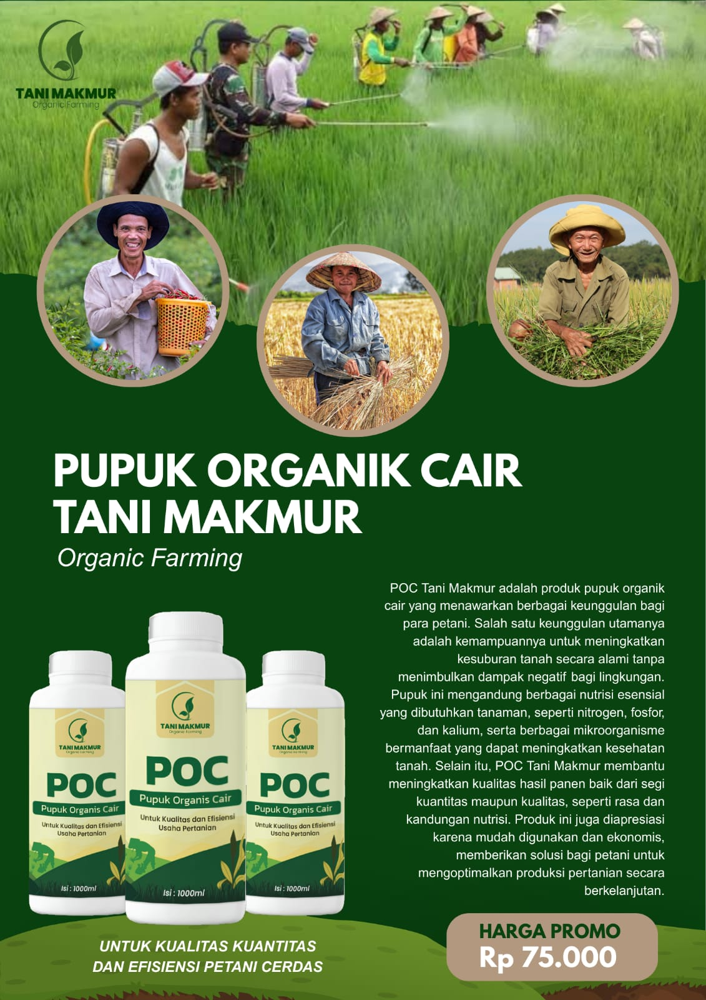
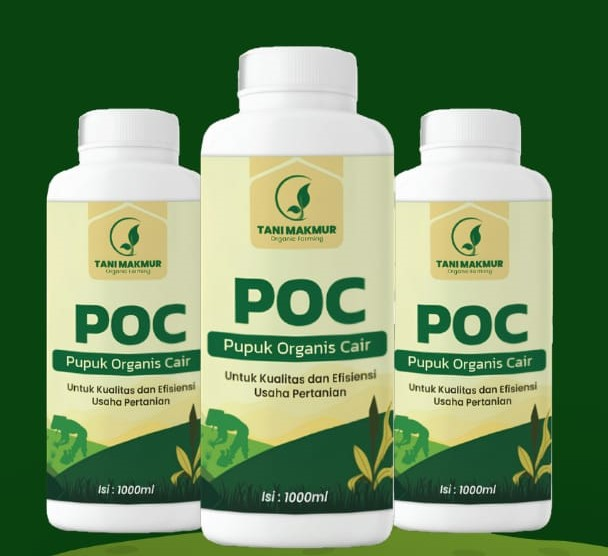

Pupuk organik cair premium yang diformulasikan untuk meningkatkan kesuburan tanah, mempercepat pertumbuhan tanaman, dan menghasilkan panen yang lebih melimpah.

Pupuk Organik Cair (POC) Tani Makmur terbuat dari bahan organik terfermentasi yang kaya nutrisi. POC ini mengandung nitrogen, fosfor, kalium, dan mikroorganisme yang bermanfaat untuk kesehatan tanah.
Cocok untuk:
Diproduksi di: Sendang, Senori, Tuban